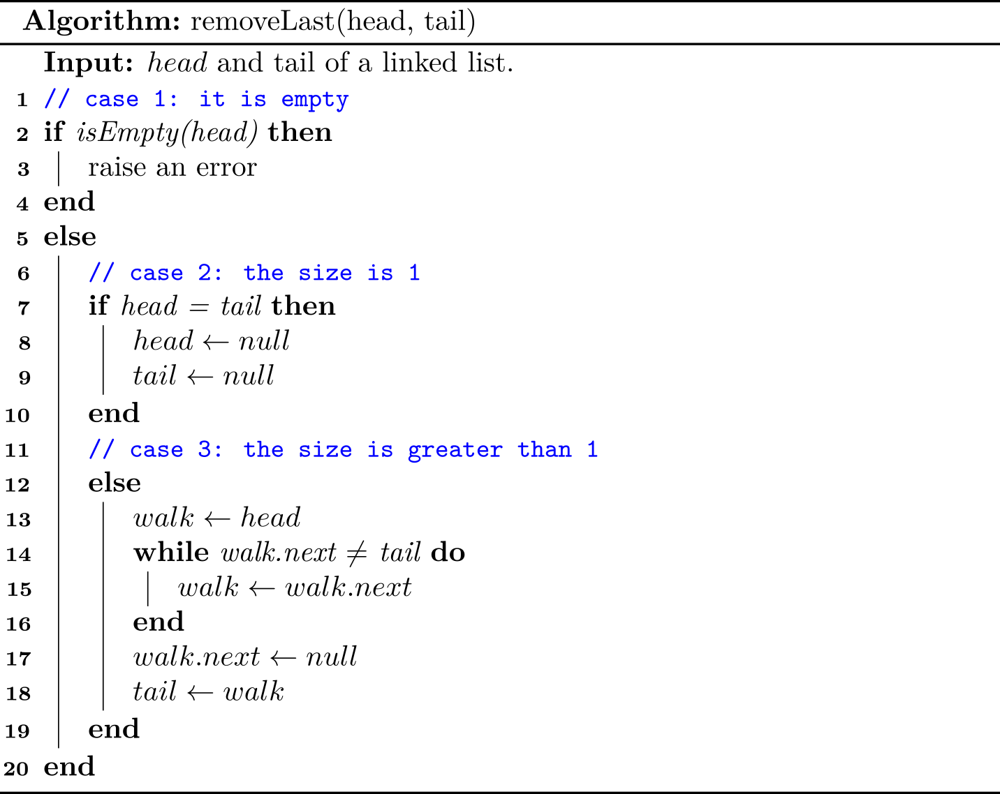

Doubly Linked List
In a singly linked list, each node maintains a reference to the node that is immediately after it. But recall that we are unable to delete a node at the tail of a list efficiently.
To boost the efficiency, we define a linked list in which each node keeps an explicit reference to the node before it and a reference to the node after it. Such ADT is known as a doubly link list, and it allows a greater variety of \(O(1)\) update operations. We continue to use the term next for the reference to the node that follows another, and we introduce the term prev for the preference to the node that precedes it.
Head and Trailer sentinels
As we can see, we need to address some special cases (e.g., the size is 0/1) when implementing an API for linked lists. In order to avoid such boundaries checking, it helps to add special nodes at both ends of the list:
- A
headernode at the beginning of the list - A
trailernode at the end of the list.
These dummy nodes are referred to sentinels (or guards), and they do not store elements of the primary sequence.

Although we could implement a doubly linked list without sentinel nodes (just as we did with the singly linked list), the slight extra memory devoted to the sentinels greatly simplifies the logic of our operations for the simple reason that both header and trailer always exist, and they will never be changed.
Let's see an example to show the convenience brought by header sentinel in a singly linked list for addLast() method.

Because there would always be an existing header, the code becomes succinct because we do not have to handle the case when its head is null.
A few notes for an empty list
Suppose Node has a constructor Node(Item item, Node<Item> prev, Node<Item> next). Initially, the empty list is constructed using the following code:
header = new Node<>(null, null, null);
trailer = new Node<>(null, header, null); // trailer is preceded by header
header.next = trailer; // header is followed by trailer
Common Operations
In what follows, we will present how to implement a doubly linked list by showing its common operations. To save the space, only update operations (add/remove) are discussed. The complete code can be found at DoublyLinkedList.java and doubly_linked_list.py.
add
First, we present a helper method to add an element between predecessor and successor.
Therefore, addFirst(e) and addLast(e) can be respectively described as:
addBetween(header, header.next, e)addBetween(trailer.prev, trailer, e)
remove
We also prepare a helper method to remove a specific node from the list.
Therefore, removeFirst() and removeLast() can be respectively described as1:
remove(header.next)remove(trailer.prev)
A few notes on Python's exceptions
For simplicity, we did not pass messages to exceptions when implementing the removing operations. For example,
def remove_first(self):
if self.is_empty():
raise NoElement
self._remove(self._header.next)
Note that raise NoElement and raise NoElement() do the same thing. See more at Is there a difference between "raise exception()" and "raise exception" without parenthesis?.
1 As for removing, it is still required to check whether it is empty.